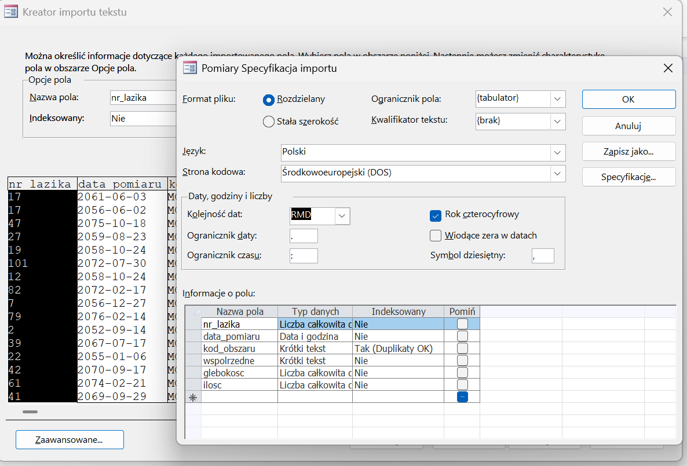
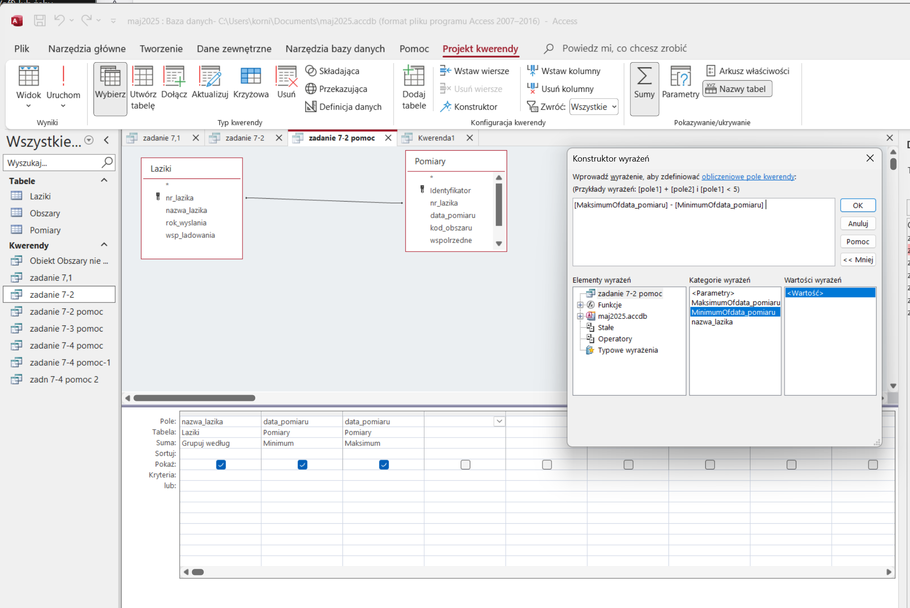
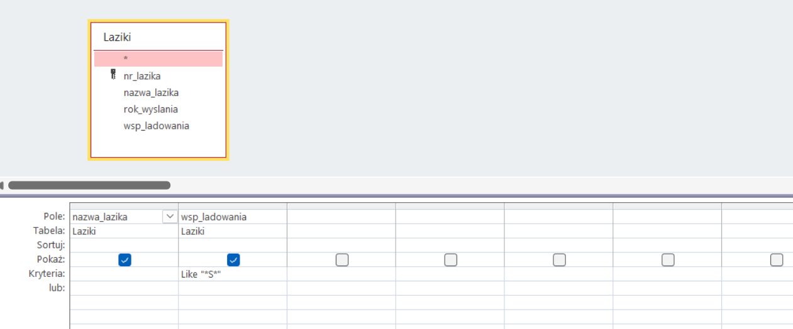

🚀 SQL w MS Access
Realizacja zadań 7.1–7.5 krok po kroku
Przewodnik dla osób, które nigdy wcześniej nie pracowały z Access SQL.
📚 Czym jest baza danych?
Baza danych to uporządkowany zbiór informacji, który przechowujemy w sposób cyfrowy.
Można ją porównać do elektronicznego segregatora lub szafy z dokumentami — wszystko jest posegregowane, łatwe do znalezienia i przeszukania.
📋 Czym jest tabela?
W bazie danych informacje są przechowywane w tabelach.
Tabela przypomina arkusz kalkulacyjny: ma wiersze i kolumny.
🔠Elementy tabeli
- Kolumna – określa typ danych, np. imię, nazwisko, e-mail.
- Rekord – jeden wiersz w tabeli, czyli jeden zestaw danych, np. jeden klient.
- Tabela – zbiór rekordów i kolumn, np. tabela â€Klienci†zawiera dane wszystkich klientów.
📊 Przykład tabeli â€Klienciâ€
| ID | Imię | Nazwisko | |
|---|---|---|---|
| 1 | Jan | Kowalski | jan.kowalski@example.com |
| 2 | Alicja | Zielińska | alicja.zielinska@example.com |
📌 Jak czytać tabelę?
Każdy wiersz to jeden klient, a każda kolumna to jeden typ informacji.
Dzięki takiej strukturze możemy łatwo przeszukiwać dane, sortować je, filtrować i analizować.
➡️ Co dalej?
W kolejnych slajdach pokażemy, jak za pomocą języka SQL tworzyć takie tabele, dodawać dane, modyfikować je i wyszukiwać konkretne informacje.
🧱 Podstawowe instrukcje SQL
Skoro wiemy już, czym jest baza danych i jak wygląda tabela, czas nauczyć się, jak za pomocą SQL możemy tworzyć, modyfikować i przeszukiwać dane. Poniżej znajdziesz najważniejsze instrukcje SQL, które stanowią fundament pracy z bazami danych.
📌 Tworzenie tabeli – CREATE TABLE
CREATE TABLE Klienci ( ID INT PRIMARY KEY, Imie VARCHAR(50), Nazwisko VARCHAR(50), Email VARCHAR(100) );
Tworzymy tabelę â€Klienci†z czterema kolumnami. ID to unikalny identyfikator, a VARCHAR(n) oznacza tekst o maksymalnej długoÅ›ci n znaków.
📌 Dodawanie danych – INSERT INTO
INSERT INTO Klienci (ID, Imie, Nazwisko, Email) VALUES (1, 'Jan', 'Kowalski', 'jan.kowalski@example.com');
📌 Pobieranie danych – SELECT
SELECT * FROM Klienci; SELECT Imie, Email FROM Klienci;
Pierwsze zapytanie pobiera wszystkie kolumny, drugie tylko imię i e-mail.
📌 Aktualizacja danych – UPDATE
UPDATE Klienci SET Email = 'jan.nowy@example.com' WHERE ID = 1;
📌 Usuwanie danych – DELETE
DELETE FROM Klienci WHERE ID = 1;
📌 Filtrowanie danych – WHERE
SELECT * FROM Klienci WHERE Nazwisko = 'Kowalski';
📌 Sortowanie danych – ORDER BY
SELECT * FROM Klienci ORDER BY Nazwisko ASC;
ASC – rosnąco, DESC – malejąco.
🔗 Łączenie danych – JOIN
Łączymy dane z tabel Klienci i Zamowienia.
SELECT Klienci.Imie, Zamowienia.Produkt, Zamowienia.DataZamowienia FROM Zamowienia INNER JOIN Klienci ON Zamowienia.KlientID = Klienci.ID;
🔗 Typy połączeń
LEFT JOIN– wszystkie z lewej tabeliRIGHT JOIN– wszystkie z prawej tabeliFULL JOIN– wszystko z obu tabel
🔠Wyszukiwanie wzorców – LIKE
SELECT * FROM Klienci WHERE Email LIKE '%example.com';
🔠Wyszukiwanie wartości – IN
SELECT * FROM Klienci
WHERE Nazwisko IN ('Kowalski', 'Nowak', 'Wiśniewski');
🔠Zakres wartości – BETWEEN
SELECT * FROM Zamowienia WHERE DataZamowienia BETWEEN '2025-01-01' AND '2025-12-31';
📊 Grupowanie danych – GROUP BY
SELECT Nazwisko, COUNT(*) AS LiczbaZamowien FROM Klienci JOIN Zamowienia ON Klienci.ID = Zamowienia.KlientID GROUP BY Nazwisko;
📊 Funkcje agregujące
COUNT()– liczba rekordówSUM()– suma wartościAVG()– średniaMAX()/MIN()– największa / najmniejsza wartość
SELECT AVG(Cena) AS SredniaCena FROM Produkty;
🧪 Ćwiczenia praktyczne z SQL
Poniżej znajdziesz trzy zadania, które pomogą Ci przećwiczyć podstawowe instrukcje SQL. Spróbuj rozwiązać je samodzielnie.
🔹 Zadanie 1: Dodaj nowego klienta
Masz tabelę Klienci z kolumnami: ID, Imie, Nazwisko, Email.
Dodaj nowy rekord z następującymi danymi:
- ID: 10
- Imię: Alicja
- Nazwisko: Zielińska
- Email: alicja.zielinska@example.com
✅ Odpowiedź – Zadanie 1
INSERT INTO Klienci (ID, Imie, Nazwisko, Email) VALUES (10, 'Alicja', 'Zielińska', 'alicja.zielinska@example.com');
🔹 Zadanie 2: Zamówienia z 2025 roku
Masz tabelę Zamowienia z kolumnami: ID, KlientID, Produkt, DataZamowienia.
Napisz zapytanie, które wyświetli wszystkie zamówienia złożone w roku 2025.
✅ Odpowiedź – Zadanie 2
SELECT * FROM Zamowienia WHERE DataZamowienia BETWEEN '2025-01-01' AND '2025-12-31';
Alternatywnie:
SELECT * FROM Zamowienia WHERE YEAR(DataZamowienia) = 2025;
Uwaga: Funkcja YEAR() może nie działać w każdej bazie danych — BETWEEN jest bardziej uniwersalne.
🔹 Zadanie 3: Liczba zamówień dla każdego klienta
Połącz tabele Klienci i Zamowienia, aby wyświetlić nazwisko klienta oraz liczbę jego zamówień.
Wyniki pogrupuj według nazwiska.
✅ Odpowiedź – Zadanie 3
SELECT Klienci.Nazwisko, COUNT(*) AS LiczbaZamowien FROM Klienci JOIN Zamowienia ON Klienci.ID = Zamowienia.KlientID GROUP BY Klienci.Nazwisko;
📷 Przygotowanie Accessa – krok po kroku
Poniżej znajdziesz zestaw instrukcji obrazkowych, które pokazują, jak przygotować środowisko pracy w Microsoft Access. Każdy krok znajduje się na osobnym slajdzie, aby ułatwić przeglądanie.
📷 Krok 1

📷 Krok 2
📷 Krok 3
📷 Krok 4
📷 Krok 5

📷 Krok 6

📷 Krok 7
📷 Krok 8
📷 Krok 9
📷 Krok 10
📷 Krok 11
📷 Krok 12
📷 Krok 13
📷 Krok 14

📷 Krok 15
📷 Krok 16
📷 Krok 17
📷 Krok 18

Zadania 7.1-7.5 z urzyciem SQL
💧 Zadanie 7.1 – Cel
Znajdź obszar z największą ilością wody (m³) na głębokości ≤ 100 m.
Kod SQL
SELECT TOP 1 o.nazwa_obszaru,
SUM(p.ilosc) AS suma_wody_m3
FROM obszary AS o
INNER JOIN pomiary AS p
ON p.kod_obszaru = o.kod_obszaru
WHERE p.glebokosc <= 100
GROUP BY o.nazwa_obszaru
ORDER BY SUM(p.ilosc) DESC;
Ogólne omówienie
- Łączymy obszary z pomiarami.
- Filtrujemy tylko pomiary do 100 m głębokości.
- Sumujemy ilość wody dla każdego obszaru.
- Wybieramy obszar z największą sumą.
Analiza linia po linii
SELECT TOP 1– wybierz tylko pierwszy rekord po sortowaniu.SUM(p.ilosc)– sumuje ilość wody.INNER JOIN– łączy dane z dwóch tabel po wspólnym polu.WHERE p.glebokosc <= 100– filtruje dane.GROUP BY– grupuje wyniki według obszaru.ORDER BY ... DESC– sortuje malejąco.
📸 Wynik działania zapytania w Accessie
Po uruchomieniu zapytania SQL w programie Microsoft Access, otrzymujemy wynik, który pokazuje obszar z największą ilością wody na głębokości do 100 metrów.
Na kolejnym slajdzie zobaczysz zrzut ekranu przedstawiający rezultat działania zapytania.
📷 Zrzut ekranu – Zadanie 7.1
ⳠZadanie 7.2 – Cel
Znajdź łazik z najdłuższym okresem pomiarów i podaj daty pierwszego i ostatniego pomiaru.
Kod SQL
SELECT TOP 1 l.nazwa_lazika,
MIN(p.data_pomiaru) AS pierwszy_pomiar,
MAX(p.data_pomiaru) AS ostatni_pomiar,
DATEDIFF('d', MIN(p.data_pomiaru), MAX(p.data_pomiaru)) AS liczba_dni
FROM laziki AS l
INNER JOIN pomiary AS p
ON l.nr_lazika = p.nr_lazika
GROUP BY l.nazwa_lazika
ORDER BY DATEDIFF('d', MIN(p.data_pomiaru), MAX(p.data_pomiaru)) DESC;
Ogólne omówienie
- Łączymy łaziki z ich pomiarami.
- Znajdujemy najwcześniejszy i najpóźniejszy pomiar.
- Obliczamy różnicę w dniach.
- Wybieramy łazik z największą różnicą.
Analiza linia po linii
MIN()– najwcześniejsza data pomiaru.MAX()– najpóźniejsza data pomiaru.DATEDIFF('d', ...)– liczba dni między datami.GROUP BY– grupuje dane według łazika.ORDER BY ... DESC– sortuje od największej różnicy.
📸 Wynik działania zapytania w Accessie
Po uruchomieniu zapytania SQL w programie Microsoft Access, otrzymujemy wynik, który pokazuje łazika wykonującego pomiary przez najdłuższy okres czasu.
Oznacza to największą różnicę między datą pierwszego a ostatniego pomiaru. Na kolejnym slajdzie zobaczysz zrzut ekranu z wynikiem.
📷 Zrzut ekranu – Zadanie 7.2
🛰 Zadanie 7.3 – Cel
Znajdź obszary, gdzie nie było pomiaru w roku wysłania łazika.
Kod SQL
SELECT o.nazwa_obszaru
FROM obszary AS o
WHERE o.kod_obszaru NOT IN (
SELECT DISTINCT p.kod_obszaru
FROM pomiary AS p
INNER JOIN laziki AS l
ON p.nr_lazika = l.nr_lazika
WHERE YEAR(p.data_pomiaru) = l.rok_wyslania
)
ORDER BY o.nazwa_obszaru;
Ogólne omówienie
- Podzapytanie wybiera obszary, w których był pomiar w roku wysłania łazika.
- NOT IN – odrzuca te obszary, które spełniają warunek w podzapytaniu.
- W efekcie zostają tylko obszary bez takich pomiarów.
🔠Analiza linia po linii – część 1
SELECT o.nazwa_obszaru– wybieramy nazwy obszarów.WHERE o.kod_obszaru NOT IN (...)– filtrujemy, aby wykluczyć obszary z listy w podzapytaniu.- Podzapytanie – co się dzieje wewnątrz nawiasu:
🔠Analiza linia po linii – część 2
SELECT DISTINCT p.kod_obszaru– unikalne kody obszarów z pomiarami.INNER JOIN laziki– łączenie pomiarów z łazikami.WHERE YEAR(p.data_pomiaru) = l.rok_wyslania– tylko pomiary z roku wysłania.
📸 Wynik działania zapytania w Accessie
Po uruchomieniu zapytania SQL w programie Microsoft Access, otrzymujemy wynik, który pokazuje listę obszarów, w których nie wykonano żadnego pomiaru w roku wysłania łazika.
Na kolejnym slajdzie zobaczysz zrzut ekranu z rezultatem działania zapytania.
📷 Zrzut ekranu – Zadanie 7.3
🌠Zadanie 7.4 – Cel
Znajdź łaziki, które wylądowały na południowej półkuli i wykonywały pomiary na obu półkulach.
Kod SQL
SELECT l.nazwa_lazika
FROM Laziki AS l
INNER JOIN Pomiary AS p
ON l.nr_lazika = p.nr_lazika
WHERE l.wsp_ladowania LIKE "*S*"
GROUP BY l.nazwa_lazika
HAVING SUM(IIF(p.wspolrzedne LIKE "*N*", 1, 0)) > 0
AND SUM(IIF(p.wspolrzedne LIKE "*S*", 1, 0)) > 0;
Ogólne omówienie
- Filtrujemy łaziki, które wylądowały na południowej półkuli.
- Sprawdzamy, czy w pomiarach są punkty z obu półkul.
- Używamy HAVING do warunków po grupowaniu.
Analiza linia po linii
WHERE l.wsp_ladowania LIKE "*S*"– wybiera łaziki z literą "S" w współrzędnych lądowania.GROUP BY l.nazwa_lazika– grupuje dane według łazika.HAVING SUM(IIF(...)) > 0– sprawdza, czy są pomiary z półkuli północnej i południowej.IIF– funkcja warunkowa w Accessie, zwraca 1 jeśli warunek jest spełniony, 0 jeśli nie.
📸 Wynik działania zapytania w Accessie
Po uruchomieniu zapytania SQL w programie Microsoft Access, otrzymujemy wynik, który pokazuje łaziki wylądowane na południowej półkuli, które wykonywały pomiary zarówno na półkuli północnej, jak i południowej.
Na kolejnym slajdzie zobaczysz zrzut ekranu z rezultatem działania zapytania.
📷 Zrzut ekranu – Zadanie 7.4
ğŸ Zadanie 7.5 – Cel
Podaj nazwy producentów, których łaziki badały obszar Arcadia w roku 2060.
Kod SQL
SELECT DISTINCT pr.nazwa
FROM (Producent AS pr
INNER JOIN Laziki AS l
ON pr.kod_producenta = l.kod_producenta)
INNER JOIN (Pomiary AS pm
INNER JOIN Obszary AS o
ON pm.kod_obszaru = o.kod_obszaru)
ON l.nr_lazika = pm.nr_lazika
WHERE o.nazwa_obszaru = "Arcadia"
AND YEAR(pm.data_pomiaru) = 2060
ORDER BY pr.nazwa;
Ogólne omówienie
- Łączymy cztery tabele: Producent, Laziki, Pomiary, Obszary.
- Filtrujemy tylko pomiary w Arcadii z roku 2060.
- Usuwamy duplikaty producentów.
- Sortujemy alfabetycznie.
Analiza linia po linii
SELECT DISTINCT pr.nazwa– wybiera unikalne nazwy producentów.INNER JOIN– łączy tabele po kluczach obcych.WHERE o.nazwa_obszaru = "Arcadia"– filtruje obszar.YEAR(pm.data_pomiaru) = 2060– filtruje rok pomiaru.ORDER BY pr.nazwa– sortuje wyniki alfabetycznie.
🯠Podsumowanie
- Nauczyliśmy się łączyć tabele w Access SQL przy pomocy JOIN.
- Wykorzystaliśmy GROUP BY, HAVING, WHERE i DISTINCT.
- Rozwiązaliśmy krok po kroku zadania 7.1–7.5.
- Teraz możesz samodzielnie modyfikować zapytania i analizować inne dane.
Zadania 7.1-7.4 z urzyciem kreatora kwerend MS Access
💧 Zadanie 7.1 – Cel
Znajdź obszar z największą ilością wody (m³) na głębokości ≤ 100 m.
Rozwiązanie
Na zrzucie w sekcji kwerendy may do dyspozycji 3 okna: Kreator kwerend, Projekt Kwerendy, Kwerenda SQL Wybieramy Projekt KwerendyRozwiązanie
Po uruchomieniu lewym przyciskiem myszy możemy przeciągać wybrane tabele na obszar projektowania Jeżeli klucze podstawowe są poprawnie zdefiniowane, program automatycznie je ze sobą połączy, jeżeli się tak nie stanie trzeba wykonać to ręcznie.Ten proces odpowiada łączeniu tabel w SQL.
zawsze można to sprawdzić, choć nie zawsze zadziała poprawnie :) - lewy góny róg i kliknąć widok w SQL
Rozwiązanie
Przeciągamy interesujące nas pola do dolnej części okna projektowania kwerendy W tym przypadku są to nazwa_obszaru z tabeli obszary oraz ilosc i glebokosc z tabeli pomiaryZawsze można je wpisać ręcznie, ale nie zalecam
Rozwiązanie
Aby uwidocznić pole do wyboru funkcji sortujących trzeba kliknąć w pole sumy w prawym górnym rogu
Rozwiązanie
w naszym zadaniu mamy wyszukać obszr o największej ilości wody na głębokosći ≤ 100m więc: w polu kryteria wpisujemy <=100 przy kolumnie odpowiadającej głębokości, w polu sortuj po ilości ustalamy malejąco ponieważ jest wiele pomiarów więc aby wyliczyc je wszystkie trzeba je zsumować zaznaczając w oknie suma: sumuj przy ilościpozostałe pola mają wpisane grupuj według powoduje to że rekordy się nie powielają,a widok tabeli jest przejrzysty
Rozwiązanie
aby zwrócić okresloną liczbę rekordów nalezy w oknie zwróć wpisać ich liczbę/ ich procent
ⳠZadanie 7.2 – Cel
Znajdź łazik z najdłuższym okresem pomiarów i podaj daty pierwszego i ostatniego pomiaru.
Rozwiązanie
Zadanie podzielimy Na dwie kwerendy zaczniemy od tej która wyświetli nam najstarcszy i najmłodzy pomiar można zauważyć że w dolnym oknie do wyboru kolumn do wyświetlenia można wstawiać jedno pole kilkukortnieRozwiązanie
Następnie korzsytając z konstrutkora wyrażeń odejmujemy obydwie daty od siebie  aby móc skorzystać z konstruktora trzeba kliknąc najpierw na obszar wyboru pola, inaczej opcja kontruktora będzie wyszarzana🛰 Zadanie 7.3 – Cel
Znajdź obszary, gdzie nie było pomiaru w roku wysłania łazika.
Rozwiązanie
Zaczynamy od wyszukania obszarów w których doszło do pomiaru w roku lądowania łazika jak widać w polu kryteria w kolumnie trzeciej wystarczy podać wartość do której ekordy mają byc porównywane, a w komórce suma wstawić gdzie - działa jak where w SQLRozwiązanie
Dalej użyjemy kreatora kwerend -> kreatora kwerend wyszukujących niepsujące daneRozwiązanie
Wybieramy tabele , albo kwerendy - co potrzebujemyRozwiązanie
Wybieramy tabele , albo kwerendę - w której znajdują się dane niepasujące których szukamyRozwiązanie
Wybieramy pola w których znajdują się pasujące daneRozwiązanie
Wybieramy pola które chcemy zobaczyćRozwiązanie
Kilkając zakończ mamy wynik🌠Zadanie 7.4 – Cel
Znajdź łaziki, które wylądowały na południowej półkuli i wykonywały pomiary na obu półkulach.
Rozwiązanie
Tutaj posłużymy się kilkoma kwerendami pomocniczymi- Najpierw wyszukamy łaziki które wylądowały na południowej półkuli
- Następnie wyszukamy łaziki które wykonywały pomiary na półkuli północnej
- Następnie wyszukamy łaziki które wykonywały pomiary na półkuli południowej
- Na końcu połączymy te trzy kwerendy aby uzyskać wynik końcowy
Rozwiązanie
łaziki które wylądowały na południowej półkuli Rozwiązanie
łaziki które wykonywały pomiary na półkuli północnejRozwiązanie
łaziki które wykonywały pomiary na półkuli południowejRozwiązanie
Na końcu połączymy te trzy kwerendy aby uzyskać wynik końcowy zauważ że wystarczyło połączyć tabele ze sobą po nazwie i wybrać opcję grupuj według w komórce sumy - access sam łączy i wyświetla tylko ter rekordy które występują w każdej z tabelRozwiązanie
WynikAccess okno pracy
Menu wstążki - Projekt Kwerendy
Zawiera wszystkie narzędzia potrzebne do pracy – tworzenie tabel, kwerend, import danych, zarządzanie relacjami. W zakładce Projekt kwerendy są przyciski do dodawania tabel, kolumn i ustawiania grupowania czy sum.Menu wstążki - Projekt Kwerendy
Szczególnie przydatne przyciski to: Sumy, konstruktor, i zwróć(określa ile rekordów ma być wyświetlonych)Sumy
Przycisk Sumy w Accessie dodaje w siatce kwerendy wiersz â€Sumaâ€. Dzięki temu możesz wykonywać operacje agregujące, takie jak Sumy, Średnie, Minimum, Maksimum czy Grupowanie. Ułatwia to analizę danych bez potrzeby pisania zapytań SQL ręcznie.Kreator
Aby wogóle go użyć trzeba najpierw kliknąć na jedną z komórek w siatce kwerendy(pasek na dole)(zaznaczone) Konstruktor w Accessie pozwala na ręczne budowanie kwerend w trybie SQL lub projektowym. Dzięki niemu możesz dodawać tabele, ustalać relacje między nimi oraz wybierać pola, które znajdą się w wynikach. Daje też możliwość ustawiania warunków, sortowania i funkcji agregujących (np. suma, minimum, maksimum).Kreator
Okno konstruktoraPanel nawigacji
Wyświetla listę wszystkich obiektów w bazie: tabele, kwerendy, formularze i raporty. Ułatwia szybkie przechodzenie między elementami bazy danych. Poprzez chwycenie i przeciągnięcie obiektu z panelu nawigacji możesz łatwo dodawać go do projektu.Obszar projektu kwerendy
Tutaj przeciągasz i łączysz tabele, aby tworzyć zapytania łączące dane z różnych źródeł. Możesz też dodawać konkretne pola, które mają być uwzględnione w wynikach. W tym obszarze mozesz też łączyć klucze podstawowe poprzez przeciąganie tych pól.Siatka kwerendy
Służy do definiowania, które pola mają być wyświetlane w wynikach, w jakiej kolejności i z jakimi warunkami. Możesz też ustawiać sumowania, kryteria oraz sortowanie. Zastępuje ona warunki które normalnie trzeba pisać za pomocą SQL - możesz w niej ustawiać kryteria filtrowania, sortowania oraz agregacji danych. Poszczególne nazwy dostępnych funkcji są tłumaczeniem z angielskeigo funkcji SQLPodsumowanie
W tej sekcji omówiliśmy podstawowe elementy interfejsu użytkownika w Accessie, które ułatwiają pracę z kwerendami. Dzięki zrozumieniu tych komponentów, będziesz w stanie efektywniej tworzyć i modyfikować zapytania w swojej bazie danych.POWODZENIA :)
💡 Dziękuję za uwagę!
Spróbuj zmienić warunki w zapytaniach i zobacz, jak zmienia się wynik.